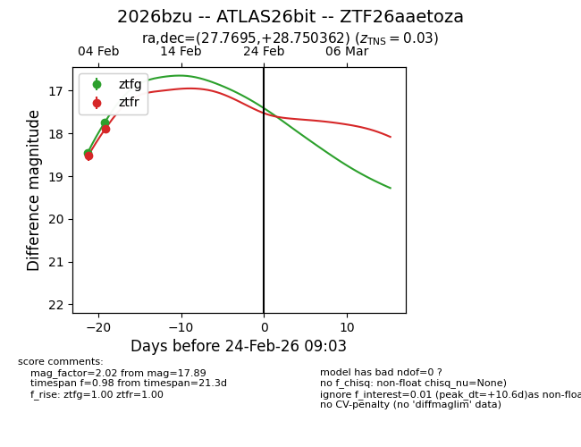
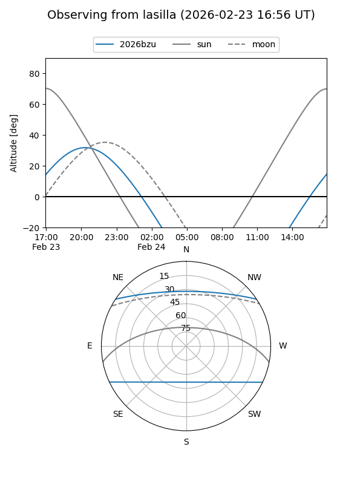
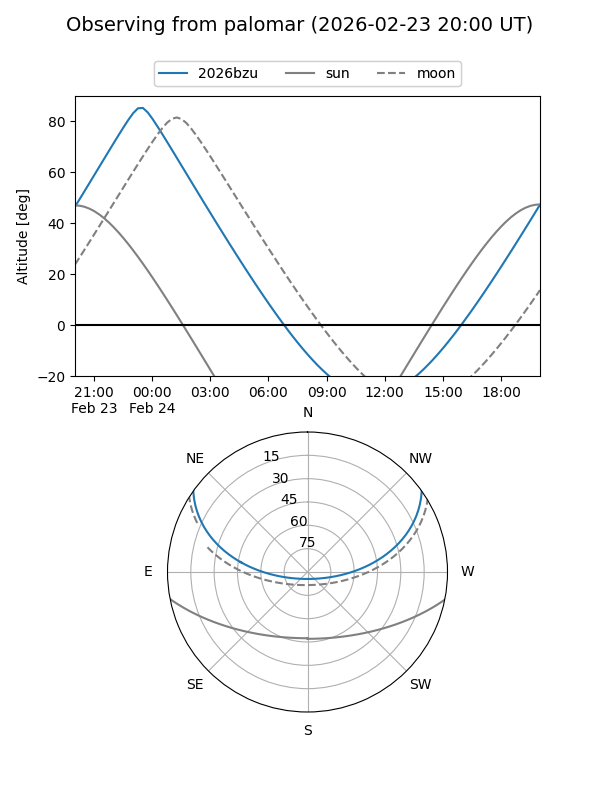
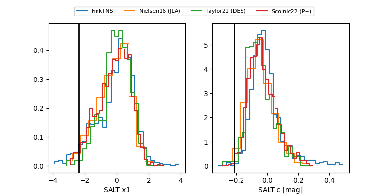

2026bzu
Target 2026bzu at 2026-02-24 09:08
Aliases and brokers:
FINK: link
Lasair: link
ALeRCE: link
TNS: link
YSE: link
alt names
ZTF26aaetoza (ztf,fink_ztf)
2026bzu (tns,yse)
ATLAS26bit (atlas)
Coordinates:
equatorial (ra, dec) = 27.7695,+28.75036
equatorial (HMS+DMS) = 01:51:04.67,+28:45:01.30
galactic (l, b) = (138.4144,-32.32202)
Flags:
confirmed ia
Photometry:
last ztfg=17.74, ztfr=17.89
2 ztfg, 2 ztfr detections
Lightcurve

Visibility


Additional plots
